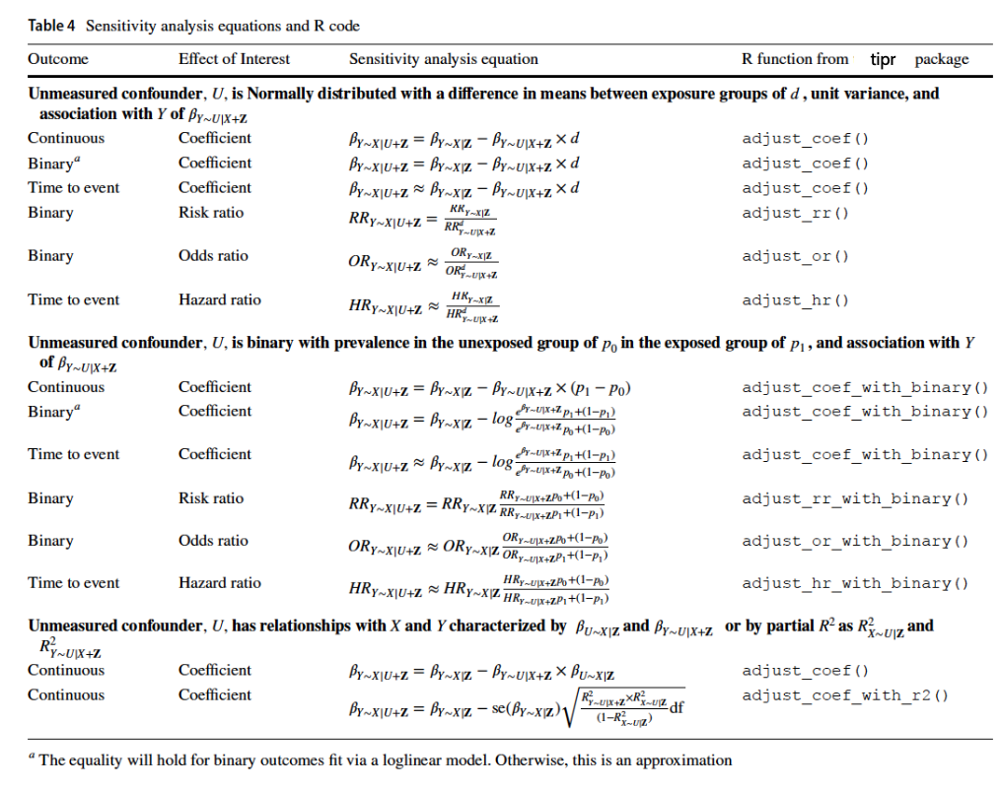
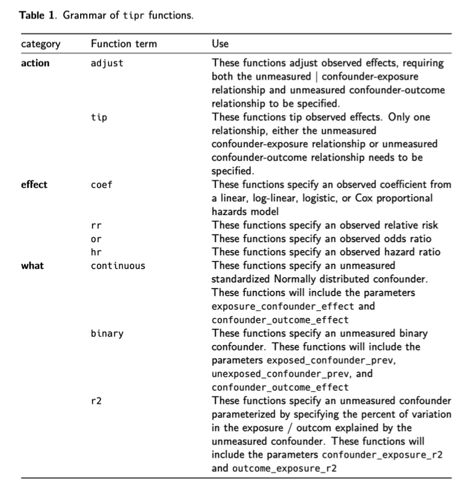

Tipping Point Sensitivity Analyses
Wake Forest University
Recall: Propensity scores
Rosenbaum and Rubin showed in observational studies, conditioning on propensity scores can lead to unbiased estimates of the exposure effect
- There are no unmeasured confounders
- Every subject has a nonzero probability of receiving either exposure
Quantifying Unmeasured Confounding
Quantifying Unmeasured Confounding
- The exposure-outcome effect
- The exposure-unmeasured confounder effect
- The unmeasured confounder-outcome effect
Quantifying Unmeasured Confounding
What will tip our confidence bound to cross zero?
Quantifying Unmeasured Confounding


{action}_{effect}_with_{what}tip_rr_with_continous()adjust_coef_with_r2()
tipr
Question
Analysis
- New-user design
- Matched 42,217 new metformin users to 42,217 new sulfonylurea users
- Fit adjusted Cox proportional hazards model on the matched cohort
Results
- Outcome: Lung Cancer
- Adjusted Hazard Ratio: 0.87 (0.79, 0.96)
What if alcohol consumption is an unmeasured confounder?
What if heavy alcohol consumption is prevalent among 4% of Metformin users and 6% of Sulfonylurea users?
Meadows SO, Engel CC, Collins RL, Beckman RL, Cefalu M, Hawes-Dawson J, et al. 2015 health related behaviors survey: Substance use among US active-duty service members. RAND; 2018.
tipr Example
What if we assume the effect of alcohol consumption on lung cancer after adjusting for other confounders is 2?
Results
- Outcome: Lung Cancer
- Adjusted Hazard Ratio: 0.87 (0.79, 0.96)
tipr Example
What if we assume the effect of alcohol consumption on lung cancer after adjusting for other confounders is 2?
What if heavy alcohol consumption is prevalent among 4% of Metformin users and 6% of Sulfonylurea users?
Meadows SO, Engel CC, Collins RL, Beckman RL, Cefalu M, Hawes-Dawson J, et al. 2015 health related behaviors survey: Substance use among US active-duty service members. RAND; 2018.
tipr Example
What if we assume the effect of alcohol consumption on lung cancer after adjusting for other confounders is 2?
tipr Example
# A tibble: 3 × 5
hr_adjusted hr_observed exposed_confounder_prev unexposed_confounder_prev
<dbl> <dbl> <dbl> <dbl>
1 0.805 0.79 0.04 0.06
2 0.887 0.87 0.04 0.06
3 0.978 0.96 0.04 0.06
# ℹ 1 more variable: confounder_outcome_effect <dbl>“If heavy alcohol consumption differed between groups, with 4% prevalence among metformin users and 6% among sulfonylureas users, and had an HR of 2 with lung cancer incidence the updated adjusted effect of metformin on lung cancer incidence would be an HR of 0.89 (95% CI: 0.81–0.98). Should an unmeasured confounder like this exist, our effect of metformin on lung cancer incidence would be attenuated and fall much closer to the null.
tipr Example
tipr Example

tipr Example
tipr Example
# A tibble: 1 × 1
confounder_outcome_effect
<dbl>
1 3.27“If heavy alcohol consumption differed between groups, with 4% prevalence among metformin users and 6% among sulfonylureas users, it would need to have an association with lung cancer incidence of 3.27 to tip this analysis at the 5% level, rendering it inconclusive. This effect is larger than the understood association between lung cancer and alcohol consumption.”
What is known about the unmeasured confounder?
Both exposure and outcome relationship is known
adjust_*functions
Only one of the exposure/outcome relationships is known
adjust_*functions in an arraytip_*functions
Nothing is known
adjust_*ortip_*functions in an arraytip_coef_with_r2()(measured confounders)- Robustness value
r_value()& E-valuese_value()
Disney Data: Extra magic morning & wait times
tip_coef()
effect_observed: observed exposure - outcome effect 6.17 minutes (95% CI: 2.02, 10.40)
Disney Data
tip_coef()
exposure_confounder_effect: scaled mean difference between the unmeasured confounder in the exposed and unexposed population
Disney Data
tip_coef()
confounder_outcome_effect: relationship between the unmeasured confounder and outcome
Your turn
05:00